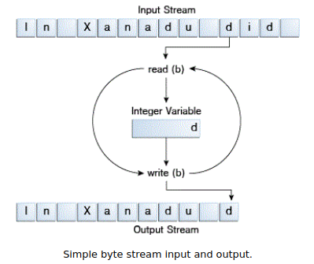

I/O
sumber : https://docs.oracle.com/javase/tutorial/essential/io/index.htmlI/O Stream :
- Byte Stream : 
import java.io.FileInputStream;
import java.io.FileOutputStream;
import java.io.IOException;
public class CopyBytes {
public static void main(String[] args) throws IOException {
FileInputStream in = null;
FileOutputStream out = null;
try {
in = new FileInputStream("xanadu.txt");
out = new FileOutputStream("outagain.txt");
int c;
while ((c = in.read()) != -1) {
out.write(c);
}
} finally {
if (in != null) {
in.close();
}
if (out != null) {
out.close();
}
}
}
}
import java.io.FileReader;
import java.io.FileWriter;
import java.io.IOException;
public class CopyCharacters {
public static void main(String[] args) throws IOException {
FileReader inputStream = null;
FileWriter outputStream = null;
try {
inputStream = new FileReader("xanadu.txt");
outputStream = new FileWriter("characteroutput.txt");
int c;
while ((c = inputStream.read()) != -1) {
outputStream.write(c);
}
} finally {
if (inputStream != null) {
inputStream.close();
}
if (outputStream != null) {
outputStream.close();
}
}
}
}
import java.io.FileReader; import java.io.FileWriter; import java.io.BufferedReader; import java.io.PrintWriter; import java.io.IOException;public class CopyLines { public static void main(String[] args) throws IOException {
BufferedReader inputStream = null; PrintWriter outputStream = null;
try { inputStream = new BufferedReader(new FileReader("xanadu.txt")); outputStream = new PrintWriter(new FileWriter("characteroutput.txt"));
String l; while ((l = inputStream.readLine()) != null) { outputStream.println(l); } } finally { if (inputStream != null) { inputStream.close(); } if (outputStream != null) { outputStream.close(); } } } }
inputStream = new BufferedReader(new FileReader("xanadu.txt"));
outputStream = new BufferedWriter(new FileWriter("characteroutput.txt"));import java.io.*;
import java.util.Scanner;
public class ScanXan {
public static void main(String[] args) throws IOException {
Scanner s = null;
try {
s = new Scanner(new BufferedReader(new FileReader("xanadu.txt")));
while (s.hasNext()) {
System.out.println(s.next());
}
} finally {
if (s != null) {
s.close();
}
}
}
}
import java.io.FileReader;
import java.io.BufferedReader;
import java.io.IOException;
import java.util.Scanner;
import java.util.Locale;
public class ScanSum {
public static void main(String[] args) throws IOException {
Scanner s = null;
double sum = 0;
try {
s = new Scanner(new BufferedReader(new FileReader("usnumbers.txt")));
s.useLocale(Locale.US);
while (s.hasNext()) {
if (s.hasNextDouble()) {
sum += s.nextDouble();
} else {
s.next();
}
}
} finally {
s.close();
}
System.out.println(sum);
}
}
public class Root {
public static void main(String[] args) {
int i = 2;
double r = Math.sqrt(i);
System.out.print("The square root of ");
System.out.print(i);
System.out.print(" is ");
System.out.print(r);
System.out.println(".");
i = 5;
r = Math.sqrt(i);
System.out.println("The square root of " + i + " is " + r + ".");
}
}
public class Root2 {
public static void main(String[] args) {
int i = 2;
double r = Math.sqrt(i);
System.out.format("The square root of %d is %f.%n", i, r);
}
}
public class Format {
public static void main(String[] args) {
System.out.format("%f, %1$+020.10f %n", Math.PI);
}
}
import java.io.Console;
import java.util.Arrays;
import java.io.IOException;
public class Password {
public static void main (String args[]) throws IOException {
Console c = System.console();
if (c == null) {
System.err.println("No console.");
System.exit(1);
}
String login = c.readLine("Enter your login: ");
char [] oldPassword = c.readPassword("Enter your old password: ");
if (verify(login, oldPassword)) {
boolean noMatch;
do {
char [] newPassword1 = c.readPassword("Enter your new password: ");
char [] newPassword2 = c.readPassword("Enter new password again: ");
noMatch = ! Arrays.equals(newPassword1, newPassword2);
if (noMatch) {
c.format("Passwords don't match. Try again.%n");
} else {
change(login, newPassword1);
c.format("Password for %s changed.%n", login);
}
Arrays.fill(newPassword1, ' ');
Arrays.fill(newPassword2, ' ');
} while (noMatch);
}
Arrays.fill(oldPassword, ' ');
}
// Dummy change method.
static boolean verify(String login, char[] password) {
// This method always returns
// true in this example.
// Modify this method to verify
// password according to your rules.
return true;
}
// Dummy change method.
static void change(String login, char[] password) {
// Modify this method to change
// password according to your rules.
}
}
File I/O :
- Path Operation
- Creating a Path
- Retrieving Information About a Path
- Removing Redundancies from a Path
- Converting a Path
- Joining Two Paths
- Creating a Path Between Two Paths
- Comparing Two Paths
- Apa lagi
-
Creating a Path
You can easily create a Path object by using one of the following get methods from the Paths (note the plural) helper class:
Path p1 = Paths.get("/tmp/foo");
Path p2 = Paths.get(args[0]);
Path p3 = Paths.get(URI.create("file:///Users/joe/FileTest.java"));Path p4 = FileSystems.getDefault().getPath("/users/sally");Path p5 = Paths.get(System.getProperty("user.home"),"logs", "foo.log");Retrieving Information About a Path
// None of these methods requires that the file corresponding
// to the Path exists.
// Microsoft Windows syntax
Path path = Paths.get("C:\\home\\joe\\foo");
// Solaris syntax
Path path = Paths.get("/home/joe/foo");
System.out.format("toString: %s%n", path.toString());
System.out.format("getFileName: %s%n", path.getFileName());
System.out.format("getName(0): %s%n", path.getName(0));
System.out.format("getNameCount: %d%n", path.getNameCount());
System.out.format("subpath(0,2): %s%n", path.subpath(0,2));
System.out.format("getParent: %s%n", path.getParent());
System.out.format("getRoot: %s%n", path.getRoot());
// Solaris syntax
Path path = Paths.get("sally/bar");
// or
// Microsoft Windows syntax
Path path = Paths.get("sally\\bar");<li>
<h4><a class="header" id="rrfp" style="text-decoration: none;">Removing Redundancies from a
Path</a></h4>
</li>
<li>
<h4><a class="header" id="cp" style="text-decoration: none;">Converting a Path</a></h4>
</li>
You can use three methods to convert the <code>Path</code>. If you need to convert the path to a string that can be opened from a browser, you can use <code>toUri</code>. For example:
Path p1 = Paths.get("/home/logfile");
// Result is file:///home/logfile
System.out.format("%s%n", p1.toUri());The toAbsolutePath method converts a path to an absolute path. If the passed-in path is already absolute, it returns the same Path object. The toAbsolutePath method can be very helpful when processing user-entered file names. For example:
public class FileTest {
public static void main(String[] args) {
if (args.length < 1) {
System.out.println("usage: FileTest file");
System.exit(-1);
}
// Converts the input string to a Path object.
Path inputPath = Paths.get(args[0]);
// Converts the input Path
// to an absolute path.
// Generally, this means prepending
// the current working
// directory. If this example
// were called like this:
// java FileTest foo
// the getRoot and getParent methods
// would return null
// on the original "inputPath"
// instance. Invoking getRoot and
// getParent on the "fullPath"
// instance returns expected values.
Path fullPath = inputPath.toAbsolutePath();
}
}
Joining Two Paths
// Solaris
Path p1 = Paths.get("/home/joe/foo");
// Result is /home/joe/foo/bar
System.out.format("%s%n", p1.resolve("bar"));
or
// Microsoft Windows
Path p1 = Paths.get("C:\home\joe\foo");
// Result is C:\home\joe\foo\bar
System.out.format("%s%n", p1.resolve("bar"));
// Result is /home/joe
Paths.get("foo").resolve("/home/joe");<li>
<h4><a class="header" id="capbtp" style="text-decoration: none;">Creating a Path Between Two
Paths</a></h4>
</li>
For example, consider two relative paths defined as joe and sally:
Path p1 = Paths.get("joe");
Path p2 = Paths.get("sally");